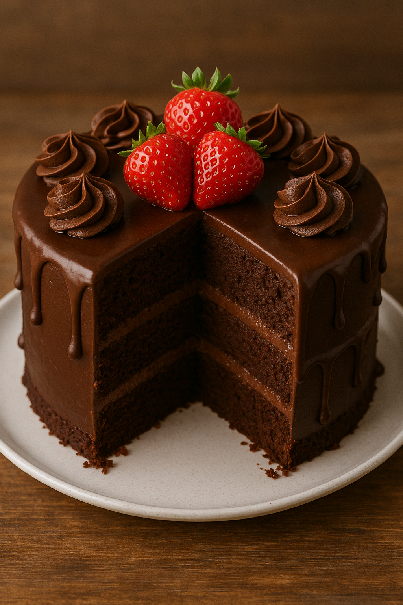

🎂 Chocolate Cake
Description
Rich, moist, and deeply chocolatey — this classic chocolate cake is a crowd-pleaser that's perfect for birthdays, celebrations, or a cozy treat night. Whether you top it with a luscious frosting or enjoy it plain, it's pure indulgence in every bite.
Ingredients
- 1 cup all-purpose flour
- 1 cup granulated sugar
- 1/2 cup unsweetened cocoa powder
- 1 tsp baking powder
- 1/2 tsp baking soda
- 1/2 cup milk
- 1/4 cup vegetable oil
- 1 large egg
- 1/2 cup hot water
Steps
- Preheat the oven to 350°F (175°C). Grease a 9-inch cake pan.
- In a large bowl, whisk together flour, sugar, cocoa powder, baking powder, and baking soda.
- Add milk, oil, and egg to the dry ingredients and mix until smooth.
- Slowly stir in hot water. The batter will be thin — this is normal!
- Pour the batter into the prepared pan and bake for 25-30 minutes, or until a toothpick comes out clean.
- Allow the cake to cool completely before frosting or serving.